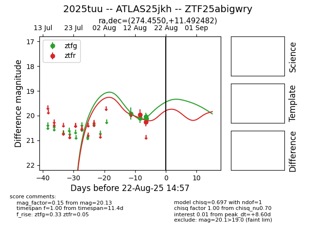

Target 2025tuu at 2025-08-22 15:56, see:
FINK: fink-portal.org/ZTF25abigwry
Lasair: lasair-ztf.lsst.ac.uk/objects/ZTF25abigwry
ALeRCE: alerce.online/object/ZTF25abigwry
TNS: wis-tns.org/object/2025tuu
YSE: ziggy.ucolick.org/yse/transient_detail/2025tuu
alt names
ZTF25abigwry (ztf,alerce)
2025tuu (tns,yse)
ATLAS25jkh (atlas)
coordinates:
equatorial (ra, dec) = (274.4550,+11.49248)
galactic (l, b) = (39.5228,+12.61056)
photometry
last atlaso=19.54, ztfg=20.13, ztfr=20.25
2 atlaso, 4 ztfg, 2 ztfr detections
